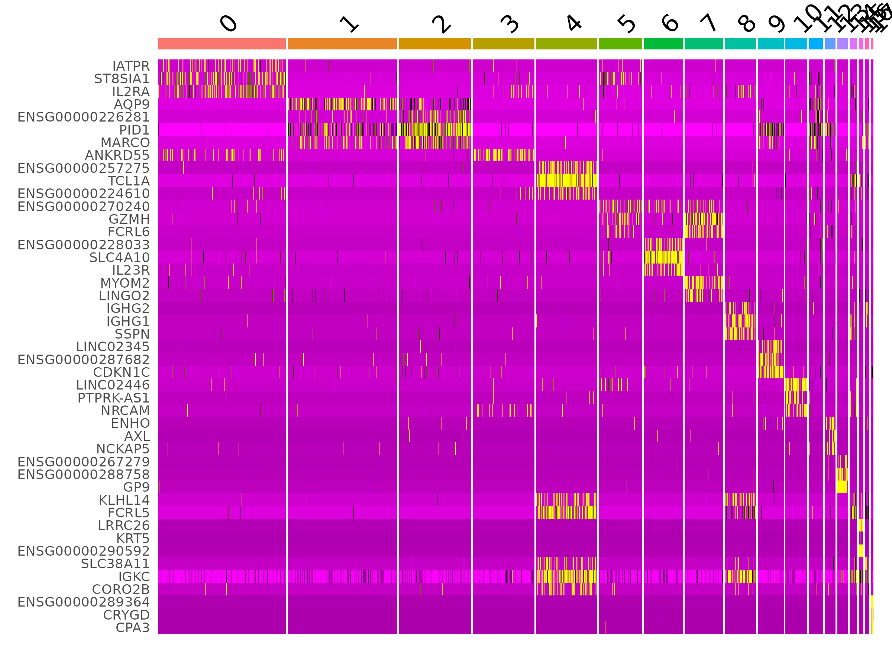
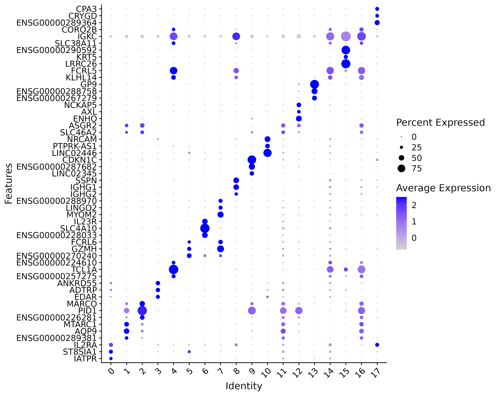
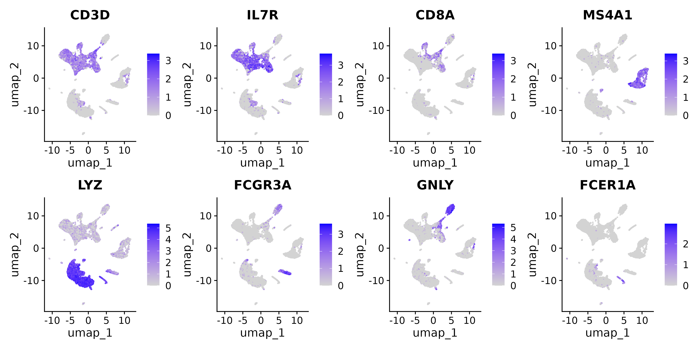
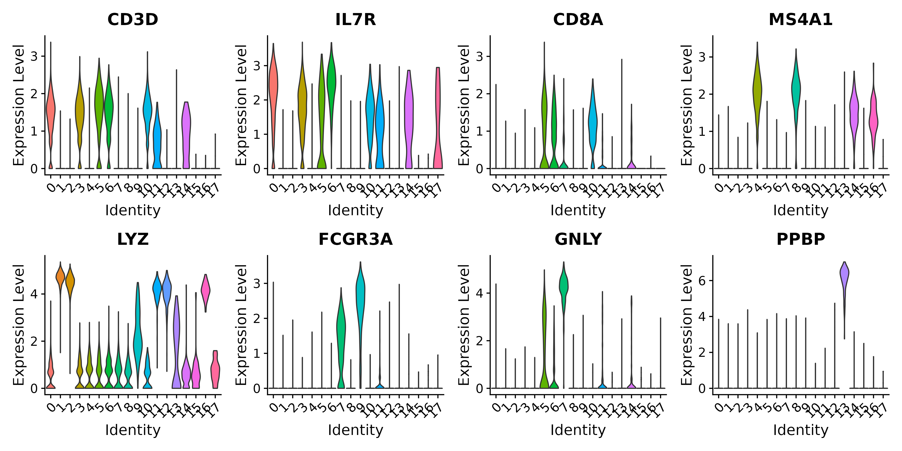
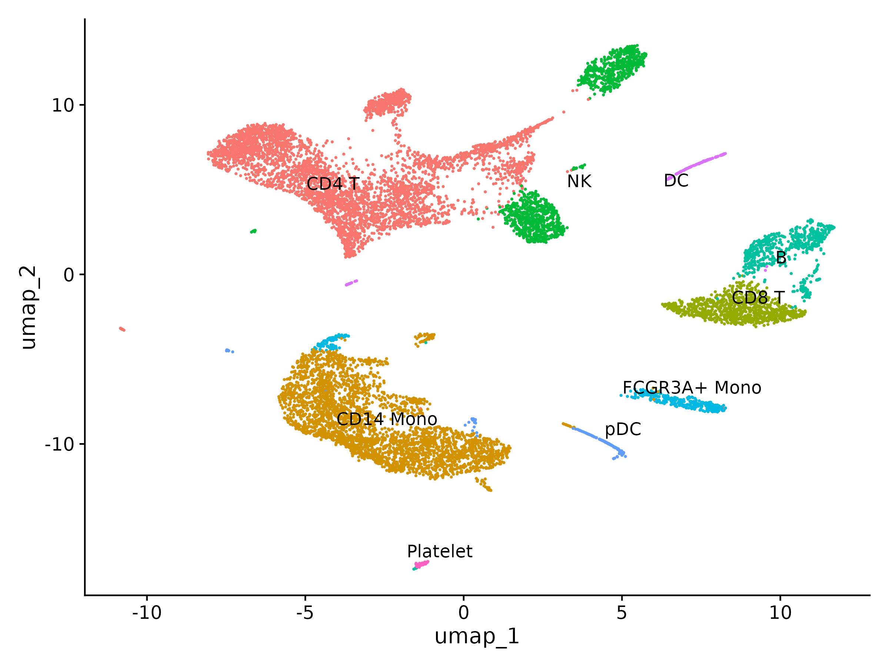
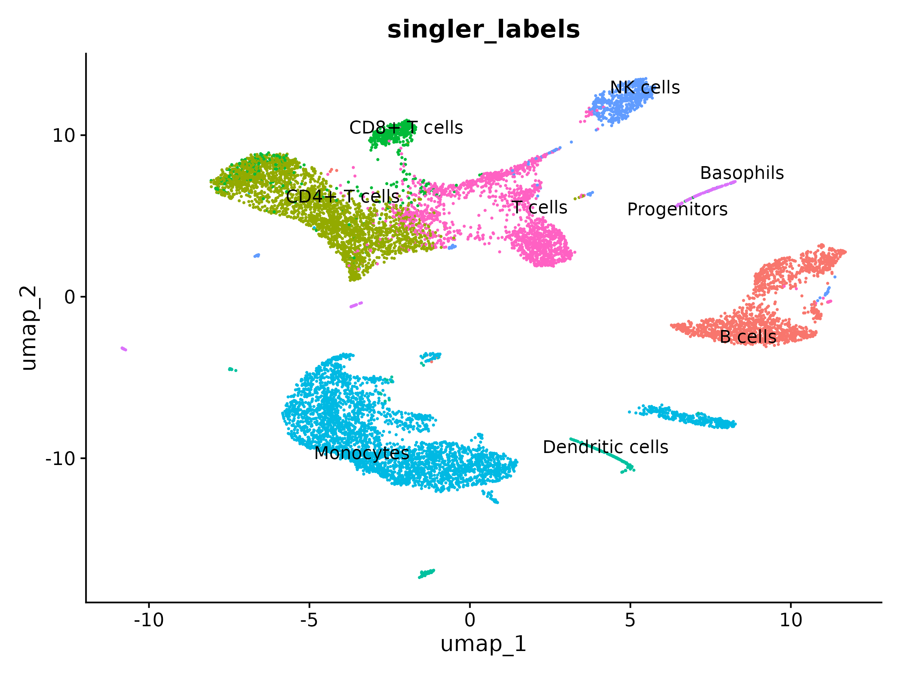
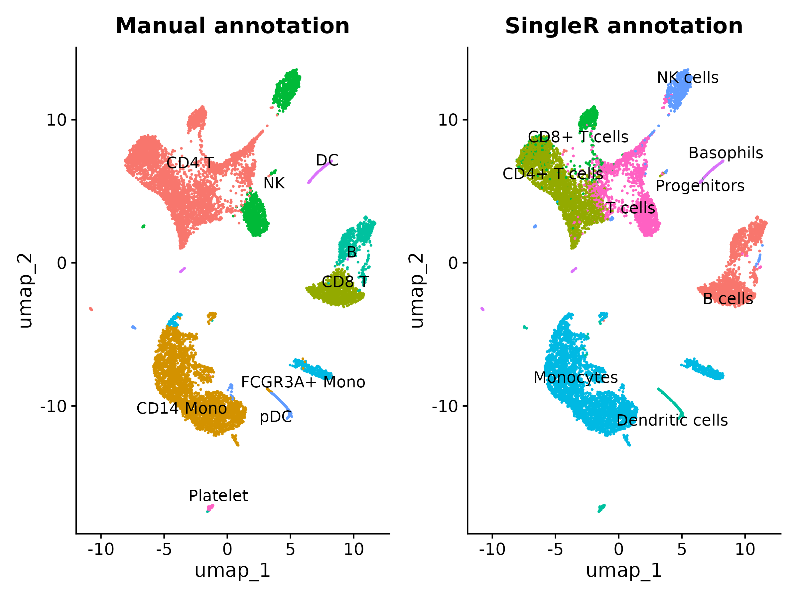
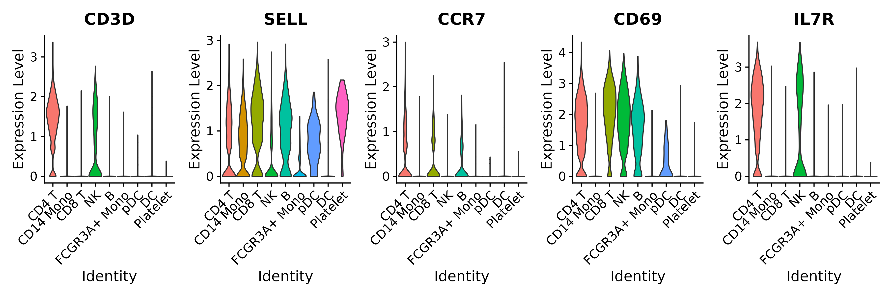

Cell Type Annotation
Last updated on 2026-06-23 | Edit this page
Estimated time: 60 minutes
Overview
Questions
- How do we systematically find the genes that define each cluster?
- How do we assign cell type labels using known marker genes?
- How does automated annotation with SingleR work?
- When do manual and automated annotations disagree and what should we do?
- What are best practices for confident, reproducible annotation?
Objectives
- Run FindAllMarkers to identify differentially expressed genes for every cluster
- Interpret marker gene statistics: avg_log2FC, pct.1, pct.2, and p_val_adj
- Manually annotate clusters using known PBMC marker genes
- Use SingleR with the Monaco Immune reference for automated cell type annotation
- Compare manual and automated annotations and resolve discrepancies
Prerequisites
This episode requires an RStudio session on the Negishi cluster.
Launch RStudio (bioconductor) under
Bioinformatics Apps on Open OnDemand as
described in the Setup
instructions. You will also need the pbmc_clustered.rds
object saved at the end of the previous episode.
Setup
R
library(Seurat)
library(ggplot2)
library(patchwork)
library(SingleR)
library(celldex)
Loading the Clustered Data
We start from the clustered Seurat object saved at the end of the previous episode. Make sure the active identity is set to the resolution 0.5 clusters.
Set up the working directory to match the previous episodes:
R
work_dir <- paste0(
"/scratch/negishi/", Sys.getenv("USER"),
"/scrna_workshop/"
)
setwd(work_dir)
R
pbmc <- readRDS(paste0(work_dir, "pbmc_clustered.rds"))
Idents(pbmc) <- "RNA_snn_res.0.5"
DimPlot(pbmc, reduction = "umap", label = TRUE, label.size = 5) + NoLegend()

You should see the UMAP with 18 clusters labeled by number (0 to 17), matching the clustering results from the previous episode.
Finding Marker Genes
Up to now, our clusters are just numbers. To give them biological meaning, we need to find the genes that distinguish each cluster from all other clusters. These are called marker genes – genes that are significantly upregulated in one cluster compared to the rest.
FindAllMarkers() runs a differential expression test for
every cluster, comparing cells in that cluster against all other
cells:
R
pbmc.markers <- FindAllMarkers(pbmc,
only.pos = TRUE,
min.pct = 0.25,
logfc.threshold = 0.25)
| Parameter | Value | Description |
|---|---|---|
only.pos |
TRUE |
Only return genes that are upregulated in the cluster (positive log fold change). We are interested in markers that define a cluster, not genes that are absent from it. |
min.pct |
0.25 |
Only test genes detected in at least 25% of cells in either the cluster or the rest. This speeds up the computation by skipping very rare genes that cannot be reliable markers. |
logfc.threshold |
0.25 |
Only test genes with at least a 0.25 log2 fold change between the cluster and the rest. This pre-filters out genes with trivially small differences. |
This step may take 5 minutes.
OUTPUT
Calculating cluster 0
Calculating cluster 1
Calculating cluster 2
Calculating cluster 3
Calculating cluster 4
Calculating cluster 5
Calculating cluster 6
Calculating cluster 7
Calculating cluster 8
Calculating cluster 9
Calculating cluster 10
Calculating cluster 11
Calculating cluster 12
Calculating cluster 13
Calculating cluster 14
Calculating cluster 15
Calculating cluster 16
Calculating cluster 17The result is a data frame with one row per gene per cluster. Let’s look at the key columns:
R
head(pbmc.markers)
OUTPUT
p_val avg_log2FC pct.1 pct.2 p_val_adj cluster gene
INPP4B 0 2.607036 0.972 0.345 0 0 INPP4B
CAMK4 0 1.653160 0.950 0.324 0 0 CAMK4
IL7R 0 2.067086 0.935 0.336 0 0 IL7R
CD3D 0 1.523352 0.923 0.334 0 0 CD3D
ITK 0 1.775408 0.920 0.338 0 0 ITK
BCL11B 0 1.586310 0.991 0.413 0 0 BCL11BThe columns mean:
| Column | Meaning |
|---|---|
p_val |
Raw p-value from the Wilcoxon rank-sum test (default test). |
avg_log2FC |
Average log2 fold change between the cluster and all other cells. A value of 1.0 means the gene is on average 2x higher in this cluster. |
pct.1 |
Fraction of cells in the cluster where the gene is detected. |
pct.2 |
Fraction of cells outside the cluster where the gene is detected. |
p_val_adj |
Bonferroni-adjusted p-value. Use this for significance filtering (typically < 0.05). |
cluster |
Which cluster this gene is a marker for. |
gene |
The gene symbol. |
A good marker gene has a high avg_log2FC, high
pct.1 (expressed in most cells of the cluster), low
pct.2 (not expressed in other clusters), and a significant
p_val_adj.
Top markers per cluster
Let’s extract the top 5 markers per cluster ranked by fold change:
R
top5 <- pbmc.markers %>%
dplyr::group_by(cluster) %>%
dplyr::slice_max(n = 5, order_by = avg_log2FC)
top5
OUTPUT
# A tibble: 90 × 7
# Groups: cluster [18]
p_val avg_log2FC pct.1 pct.2 p_val_adj cluster gene
<dbl> <dbl> <dbl> <dbl> <dbl> <fct> <chr>
1 0 5.23 0.258 0.011 0 0 IATPR
2 0 3.69 0.345 0.036 0 0 ST8SIA1
3 0 3.17 0.346 0.052 0 0 IL2RA
4 0 2.88 0.414 0.072 0 0 ICOS
5 0 2.75 0.521 0.103 0 0 FAAH2
6 0 4.46 0.29 0.023 0 1 ENSG00000289381
7 0 4.28 0.5 0.05 0 1 AQP9
8 0 4.13 0.423 0.043 0 1 MTARC1
9 0 4.09 1 0.549 0 1 S100A8
10 0 3.98 0.996 0.248 0 1 S100A12 Visualizing markers with a heatmap
A heatmap of top marker genes across all clusters shows the expression patterns at a glance. Each column is a cell (grouped by cluster), each row is a gene, and color intensity represents scaled expression:
R
top3 <- pbmc.markers %>%
dplyr::group_by(cluster) %>%
dplyr::slice_max(n = 3, order_by = avg_log2FC)
DoHeatmap(pbmc, features = top3$gene) + NoLegend()

Each cluster should show a distinct block of highly expressed genes (bright yellow/white) that are low in other clusters (dark purple). Clusters with very similar heatmap profiles may represent subtypes of the same cell type.
Dot plot summary
A dot plot provides a compact summary of marker expression across clusters. The dot size encodes the percentage of cells expressing the gene, and the color intensity encodes the average expression level:
R
DotPlot(pbmc, features = unique(top3$gene)) + coord_flip() +
theme(axis.text.x = element_text(angle = 45, hjust = 1))

Manual Annotation with Known Markers
Now we match the marker gene patterns to known PBMC cell types. The table below lists the canonical markers for each expected cell type:
| Cell type | Key markers | Expected % |
|---|---|---|
| CD4+ T cells | CD3D, IL7R, CCR7 | ~35% |
| CD8+ T cells | CD3D, CD8A, CD8B | ~10% |
| B cells | MS4A1, CD79A | ~10% |
| CD14+ Monocytes | LYZ, CD14, S100A9 | ~20% |
| FCGR3A+ Monocytes | FCGR3A, MS4A7 | ~5% |
| NK cells | GNLY, NKG7, KLRD1 | ~10% |
| Dendritic cells | FCER1A, CST3 | ~3% |
| Platelets | PPBP, PF4 | ~2% |
Let’s visualize these markers on the UMAP to see which clusters they map to:
R
FeaturePlot(pbmc,
features = c("CD3D", "IL7R", "CD8A", "MS4A1",
"LYZ", "FCGR3A", "GNLY", "FCER1A"),
ncol = 4)

And as violin plots to see expression across clusters:
R
VlnPlot(pbmc,
features = c("CD3D", "IL7R", "CD8A", "MS4A1",
"LYZ", "FCGR3A", "GNLY", "PPBP"),
ncol = 4,
pt.size = 0)

Based on these plots and the FindAllMarkers results, we
can build a mapping from cluster numbers to cell type names. Your exact
cluster numbers will depend on the random seed, but the logic is the
same: find which clusters express each set of markers.
R
# Build the cluster-to-cell-type mapping
# Adjust cluster IDs to match YOUR results
new.cluster.ids <- c(
"CD4 T", # 0: CD3D+, IL7R+, large central cluster
"CD14 Mono", # 1: LYZ+ high, large bottom cluster
"CD14 Mono", # 2: LYZ+ high, adjacent to cluster 1
"CD4 T", # 3: CD3D+, IL7R+, upper-left
"CD8 T", # 4: CD8A+, right side
"CD4 T", # 5: CD3D+, IL7R+, upper-center
"NK", # 6: GNLY+ high, center-right
"NK", # 7: GNLY+, upper-right island
"B", # 8: MS4A1+, right side
"FCGR3A+ Mono", # 9: FCGR3A+ high, lower-right
"CD4 T", # 10: CD3D+, IL7R+, small upper cluster
"CD14 Mono", # 11: LYZ+, between mono clusters
"pDC", # 12: small isolated, low expression of all major markers
"DC", # 13: FCER1A+, small upper-right
"B", # 14: MS4A1+, adjacent to cluster 8
"Platelet", # 15: PPBP+ high, small isolated bottom
"CD14 Mono", # 16: LYZ+, near mono territory
"CD4 T" # 17: CD3D+, small isolated far-left
)
names(new.cluster.ids) <- levels(pbmc)
pbmc <- RenameIdents(pbmc, new.cluster.ids)
Annotation is iterative
Your first-pass annotation will not always be correct. This is normal. After assigning labels, go back and check:
- Do the labels make biological sense? Is the proportion of each cell type reasonable for PBMCs?
- Are there clusters where multiple marker sets overlap? This may indicate a mixed cluster that should be sub-clustered at higher resolution.
- Are there clusters with no clear markers? These may be low-quality cells that slipped through QC, or a rare cell type you didn’t expect.
Annotation is an iterative process: assign labels, verify with markers, revise, and repeat until you are confident in the assignments.
Visualize the final annotated UMAP:
R
DimPlot(pbmc, reduction = "umap", label = TRUE, repel = TRUE) + NoLegend()

Store the annotation in the metadata so it persists after saving:
R
pbmc$manual_annotation <- Idents(pbmc)
Automated Annotation with SingleR
Manual annotation requires expert knowledge of marker genes for every expected cell type. SingleR offers an automated alternative: it compares the expression profile of each cell to a labeled reference dataset and assigns the label of the most similar reference sample.
Download the reference
We use the Monaco Immune Data reference from the
celldex package. This reference contains bulk RNA-seq
profiles of sorted human immune cell populations, making it well-suited
for PBMC annotation.
R
ref <- celldex::MonacoImmuneData()
ref
OUTPUT
class: SummarizedExperiment
dim: 46077 114
metadata(0):
assays(1): logcounts
rownames(46077): A1BG A1BG-AS1 ... ZYX ZZEF1
rowData names(0):
colnames(114): DZQV_CD8_naive DZQV_CD8_CM ... G4YW_Neutrophils G4YW_Basophils
colData names(3): label.main label.fine label.ontThe reference has 114 samples across multiple immune cell types. The
label.main column has broad cell type labels (e.g.,
“Monocytes”, “CD4+ T cells”) that match well with our expected PBMC
types.
Run SingleR
SingleR works on a SingleCellExperiment object. We
convert our Seurat object and then run the annotation:
R
# Convert to SingleCellExperiment
sce <- as.SingleCellExperiment(DietSeurat(pbmc))
# Run SingleR with Monaco Immune reference
results <- SingleR(test = sce,
ref = ref,
labels = ref$label.main)
| Parameter | Value | Description |
|---|---|---|
test |
sce |
The query dataset as a SingleCellExperiment. SingleR uses the log-normalized expression values. |
ref |
ref |
The reference dataset with known labels. |
labels |
ref$label.main |
Which column of the reference metadata to use as cell type labels.
label.main gives broad categories; label.fine
gives more specific subtypes. |
This runs for 1–2 minutes. SingleR assigns a label to every individual cell, not to clusters. Let’s transfer the labels to our Seurat object:
R
pbmc$singler_labels <- results$labels
Visualize the SingleR annotations on the UMAP:
R
DimPlot(pbmc, group.by = "singler_labels", reduction = "umap",
label = TRUE, repel = TRUE) + NoLegend()

Comparing manual and automated annotations
The real power of annotation comes from comparing multiple approaches. Let’s create a cross-tabulation of our manual labels versus SingleR labels:
R
table(Manual = pbmc$manual_annotation, SingleR = pbmc$singler_labels)
OUTPUT
SingleR
Manual B cells Basophils CD4+ T cells CD8+ T cells Dendritic cells Monocytes NK cells Progenitors
CD4 T 3 0 2596 583 0 5 43 22
CD14 Mono 3 0 0 0 32 3259 1 0
CD8 T 1006 0 0 0 0 0 0 0
NK 0 0 3 1 0 0 607 0
B 608 0 0 0 5 0 15 0
FCGR3A+ Mono 0 0 0 0 1 428 0 0
pDC 0 0 0 0 157 19 0 0
DC 4 2 3 2 1 6 0 154
Platelet 0 0 0 0 78 0 0 0
SingleR
Manual T cells
CD4 T 987
CD14 Mono 0
CD8 T 0
NK 662
B 11
FCGR3A+ Mono 0
pDC 0
DC 3
Platelet 0The table reveals a mix of strong agreement and instructive disagreements:
- Strong agreement: CD14+ Monocytes are overwhelmingly called “Monocytes” by SingleR (3,259 of 3,295). B cells agree well (608 of 639). FCGR3A+ Monocytes are correctly called “Monocytes” (428 of 429). These cell types have distinctive transcriptional profiles that both methods recognize.
- CD4 T cell splitting: SingleR splits our CD4 T cells across “CD4+ T cells” (2,596), generic “T cells” (987), and “CD8+ T cells” (583). The generic “T cells” label reflects SingleR’s uncertainty about subtype when activation or memory signatures blur the CD4/CD8 boundary. The 583 cells called “CD8+ T” may be misclassified by SingleR or represent a subset where our manual annotation was too broad.
- CD8 T mislabeled as B cells: this is the largest disagreement. All 1,006 cells we labeled “CD8 T” are called “B cells” by SingleR. This likely means our manual annotation of cluster 4 as CD8 T is wrong and should be reconsidered – check the MS4A1 and CD8A expression in that cluster (visible in the VlnPlot) to determine whether SingleR’s B cell call is more appropriate. Go back and verify marker expression in this cluster.
- NK split with T cells: SingleR calls 607 of our NK cells as “NK cells” but labels 662 as “T cells.” This likely reflects NKT cells or cytotoxic CD8+ T cells that share expression of GNLY and NKG7 with NK cells. Our manual annotation grouped them based on GNLY expression alone, which is insufficient to distinguish NK from NKT populations.
- DC and pDC: SingleR calls our pDC cluster “Dendritic cells” (157), which is correct at a coarser level. However, it calls our DC cluster “Progenitors” (154), suggesting the reference dataset’s progenitor signature overlaps with the markers in that small cluster. This is a case where manual annotation with known markers (FCER1A, CST3) is more trustworthy.
- Platelets misclassified: SingleR calls all 78 platelets “Dendritic cells.” Platelets are often absent from SingleR reference datasets (Monaco Immune Data does not include them), so the classifier assigns the nearest available label. This is a known limitation – always verify rare or non-standard cell types manually.
The key takeaway: neither method is always right. SingleR caught a likely error in our manual CD8 T annotation but failed on platelets and DCs. The best practice is to use both methods and investigate every disagreement.
Visualize both annotations side by side:
R
p1 <- DimPlot(pbmc, group.by = "manual_annotation", label = TRUE, repel = TRUE) +
NoLegend() + ggtitle("Manual annotation")
p2 <- DimPlot(pbmc, group.by = "singler_labels", label = TRUE, repel = TRUE) +
NoLegend() + ggtitle("SingleR annotation")
p1 + p2

When the two methods agree, you can be very confident in the label. When they disagree, check the marker gene expression for the disputed cluster and decide which label fits better. In general:
- Trust manual annotation when the markers are clear and well-established for the tissue type you are studying
- Trust SingleR when you are unfamiliar with the tissue or when the reference provides finer subtypes than you would identify manually
Save the final annotated object:
R
saveRDS(pbmc, file = "pbmc_annotated.rds")
Annotation Best Practices
Guidelines for confident annotation
-
Use multiple references. No single reference is perfect. The
celldexpackage provides several options for human immune cells:-
MonacoImmuneData()– sorted immune populations, best for PBMCs -
HumanPrimaryCellAtlasData()(HPCA) – broader coverage including non-immune cell types, but less specific for immune subtypes -
DatabaseImmuneCellExpressionData()(DICE) – another immune-focused reference with different experimental conditions
Running SingleR with multiple references and checking for agreement increases confidence.
-
Cross-validate automated labels with marker genes. Never accept automated labels blindly. Always check that the assigned label is consistent with the expression of established markers for that cell type.
Document your decisions. Record which markers you used, which reference datasets, and any ambiguous cases you resolved manually. This makes your analysis reproducible and allows others to evaluate your annotation choices.
-
Sub-cluster when needed. If a cluster shows mixed marker expression (e.g., both CD4 and CD8 markers), it may contain two cell types that were merged at the current resolution. Re-run
FindClusters()at higher resolution on just that subset of cells to resolve the mixture:R
subset_cells <- subset(pbmc, idents = "mixed_cluster") subset_cells <- FindNeighbors(subset_cells, dims = 1:15) subset_cells <- FindClusters(subset_cells, resolution = 0.5)
Challenge 1: Identifying T cell subtypes from marker combinations
The CD4 T cell group shows high expression of CD3D, SELL, and IL7R. But look at the CD69 panel – the violin is wide, not uniformly low or high. What does this heterogeneity tell you about the composition of this group?
R
VlnPlot(pbmc, features = c("CD3D", "SELL", "CCR7", "CD69", "IL7R"), ncol = 5, pt.size = 0)

The broad CD69 violin in CD4 T cells reveals that this group is not a single subtype – it contains a mixture of naive and activated T cells that were merged during our annotation.
| Marker | CD4 T pattern | Interpretation |
|---|---|---|
| CD3D | Uniformly high | Confirms T cell identity across the group |
| SELL (CD62L) | High | Lymph node homing receptor; enriched in naive and central memory T cells |
| CCR7 | Moderate, variable | Another homing receptor; high in naive, low in effector memory |
| CD69 | Broad (bimodal) | Early activation marker; low in naive, high in recently activated cells |
| IL7R (CD127) | High | IL-7 receptor for homeostatic survival; expressed on naive and memory T cells |
The CD69-low subset represents naive T cells (SELL-high, CCR7+, CD69-low) that recirculate between blood and lymph nodes but have not yet encountered antigen. The CD69-high subset represents recently activated T cells that have been stimulated.
Also note how these markers behave in other cell types:
- NK cells show the highest CD69 expression of any group, consistent with constitutive activation in circulating NK cells.
- B cells express SELL and IL7R, so these markers alone cannot distinguish T cells from B cells – you need CD3D to confirm T cell identity.
- CD8 T cells show high CD69 but low SELL, suggesting they are predominantly effector or effector memory cells rather than naive.
This illustrates why our coarse “CD4 T” label is a simplification. With higher clustering resolution or sub-clustering, you could separate the naive and activated subsets. For many analyses this level of granularity is sufficient, but for studies focused on T cell biology you would want to sub-cluster further.
Challenge 2: Comparing two SingleR references
Run SingleR with both MonacoImmuneData and
HumanPrimaryCellAtlasData. For which cell types do the two
references disagree? Why might they disagree?
R
# Monaco Immune reference (already computed above)
ref_monaco <- celldex::MonacoImmuneData()
results_monaco <- SingleR(test = sce, ref = ref_monaco, labels = ref_monaco$label.main)
# Human Primary Cell Atlas reference
ref_hpca <- celldex::HumanPrimaryCellAtlasData()
results_hpca <- SingleR(test = sce, ref = ref_hpca, labels = ref_hpca$label.main)
# Transfer labels
pbmc$singler_monaco <- results_monaco$labels
pbmc$singler_hpca <- results_hpca$labels
# Compare
table(Monaco = pbmc$singler_monaco, HPCA = pbmc$singler_hpca)
OUTPUT
HPCA
Monaco B_cell BM CMP GMP HSC_-G-CSF MEP Monocyte NK_cell Platelets Pre-B_cell_CD34-
B cells 1575 0 0 0 1 0 3 0 2 1
Basophils 0 0 0 0 0 0 0 0 2 0
CD4+ T cells 0 0 0 0 0 0 0 0 0 0
CD8+ T cells 0 0 0 0 0 0 0 0 1 0
Dendritic cells 36 0 0 8 1 0 218 0 1 6
Monocytes 4 0 0 0 7 0 3669 5 5 8
NK cells 2 0 0 0 0 0 0 649 0 1
Progenitors 0 1 20 0 0 1 3 0 151 0
T cells 3 0 0 0 0 0 0 20 1 0
HPCA
Monaco Pro-Myelocyte T_cells
B cells 1 41
Basophils 0 0
CD4+ T cells 0 2602
CD8+ T cells 0 585
Dendritic cells 0 4
Monocytes 0 19
NK cells 0 14
Progenitors 0 0
T cells 0 1639The two references agree well on some cell types and disagree sharply on others. Here are the key patterns:
1. Strong agreement: Monocytes, B cells, NK cells. Monaco “Monocytes” map almost entirely to HPCA “Monocyte” (3,669 of 3,717). Monaco “B cells” map to HPCA “B_cell” (1,575 of 1,624). Monaco “NK cells” map to HPCA “NK_cell” (649 of 666). These cell types have distinctive profiles that both references recognize.
2. T cell subtyping collapses in HPCA. Monaco distinguishes “CD4+ T cells” (2,602), “CD8+ T cells” (586), and generic “T cells” (1,663). HPCA labels all of these simply as “T_cells.” If your analysis requires T cell subtype resolution, Monaco is the better reference. Interestingly, Monaco assigns 41 B cells to HPCA “T_cells,” suggesting a small population that sits near the T/B boundary (possibly NKT cells or doublets).
3. Dendritic cells split across HPCA labels. Monaco calls 274 cells “Dendritic cells,” but HPCA scatters these across “Monocyte” (218), “CMP” (8), “Pre-B_cell_CD34-” (6), “B_cell” (36), and only 4 as “T_cells.” HPCA lacks a dedicated dendritic cell category with sufficient resolution, so DCs get assigned to the nearest available profile – usually monocytes, which share many myeloid markers.
4. Progenitors become Platelets in HPCA. Monaco labels 176 cells as “Progenitors,” and HPCA calls 151 of those “Platelets.” These are the cells we manually annotated as platelets. Monaco does not have a platelet reference profile, so it assigns them to “Progenitors” (the nearest match based on low transcriptional complexity). HPCA does include a platelet profile and gets this right. Neither reference is wrong – they just have different coverage.
5. HPCA introduces hematopoietic progenitor labels. HPCA assigns some cells to “BM,” “CMP,” “GMP,” “MEP,” “HSC_-G-CSF,” and “Pro-Myelocyte” – categories that should not be present in PBMCs. These are artifacts of the HPCA reference containing bone marrow profiles. When a cell’s expression sits between two immune types, HPCA may assign a progenitor label rather than committing to either.
Lesson: No single reference is universally best. Monaco gives better immune subtype resolution (especially for T cells and DCs) and avoids spurious non-immune labels, making it the better default for PBMCs. HPCA correctly identifies platelets where Monaco fails. The practical approach: use Monaco as your primary reference for immune tissues, cross-check disagreements with HPCA, and always validate automated labels against known marker genes.
- FindAllMarkers identifies genes upregulated in each cluster versus all others; key output columns are avg_log2FC, pct.1, pct.2, and p_val_adj
- Manual annotation maps cluster marker genes to known cell-type-specific markers and requires domain expertise
- SingleR automates annotation by comparing each cell’s expression profile to a labeled reference dataset
- Combining manual and automated approaches increases confidence; agreement between methods strongly supports the assigned label
- Annotation is iterative and should be cross-validated with multiple references and marker gene visualization